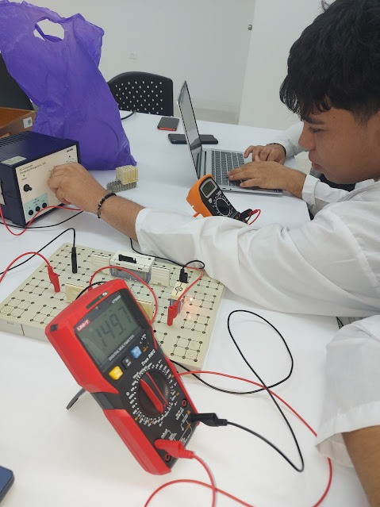
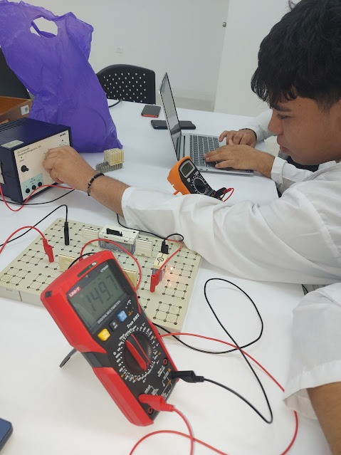

LA RESISTENCIA COMO COMPONENTE
Tópicos relacionados
Componentes eléctricos, resistor, la resistencia, código de colores
Objetivos
- Estudiar la influencia de una resistencia sobre la intensidad de un circuito.
Materiales a usar
| Materiales | Cantidad |
|---|---|
| Panel de montajes | 1 |
| Interruptor | 1 |
| Portalámparas | 1 |
| Conectores | 10 |
| Lámpara 12 V | 1 |
| Resistencias (ver tabla 1) | 1 de cada valor |
| Multímetro | 1 |
| Cables de conexión | 4 |
| Fuente de alimentación | 1 |
Montaje y procedimiento
Esquema eléctrico
- Mida el valor de las resistencias a usar y anótelos en la tabla 1.
- Monta un circuito sencillo como en la figura 1, pero sin resistencia, sólo con la lámpara.
- Calibra la tensión de la fuente, a la tensión nominal de la lámpara. Mida la corriente y obsérvese el brillo de la lámpara, luego reporte los datos en la tabla 1.
- Coloca sucesivamente en el circuito las resistencias a estudiar y observa el brillo de la lámpara. Mide en cada caso la intensidad del circuito en la escala adecuada y lleva los valores a la tabla 1.
- Desenrosca la lámpara de su zócalo, y lee el valor de la intensidad que hay impreso en el zócalo (I nominal), registra este valor.
Tabla 1. Valores medidos y observaciones
| R nominal (Ω) | R medida (Ω) | Brillo de la lámpara | Intensidad (A) |
|---|---|---|---|
| Sin resistencia | - | ||
| 100 | |||
| 150 | |||
| 220 | |||
| 1k | |||
| 10k | |||
| 47k |
Intensidad de corriente nominal de la lámpara (el valor aparece en la lámpara): ________________
Evaluación
- ¿Qué sucede con el brillo de la lámpara a medida que colocas un resistor de mayor resistencia?
- ¿Con qué resistencia se observa mayor brillo en la lámpara?, ¿Qué te sugiere esto? Justifique
- ¿Se apaga la lámpara al colocar alguna de las resistencias? Explique.
- ¿Qué sucedería si el resistor se colocara en paralelo con la lámpara y no en serie?
Bibliografía
- Serway, R. Física Volumen 2. Ed. McGraw Hill
- Tipler, P. Física Volumen 2. Ed. Reverté
- Hewitt, P. Física Conceptual. Ed. Addison Wesley
- Alonso, M. Finn, E. Física Volumen. Ed. Pearson
- Halliday, D. Resnick R. Krane, K. Física Tomo 2. Ed. CECSA
- Tippens, P. Física Fundamental. Ed. McGraw Hill
Evidencias
 
